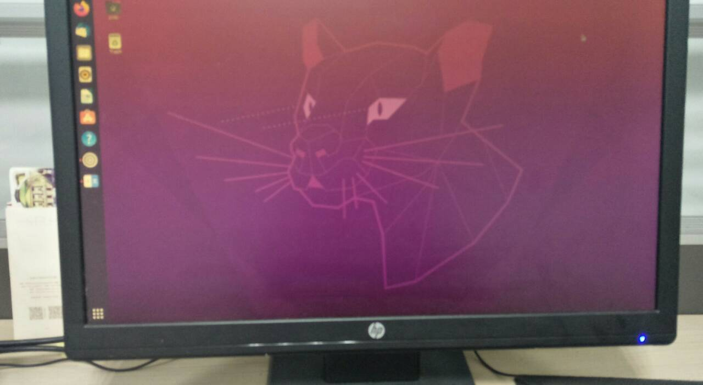
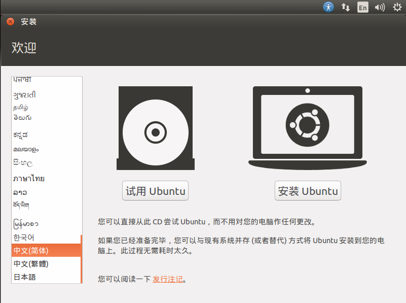
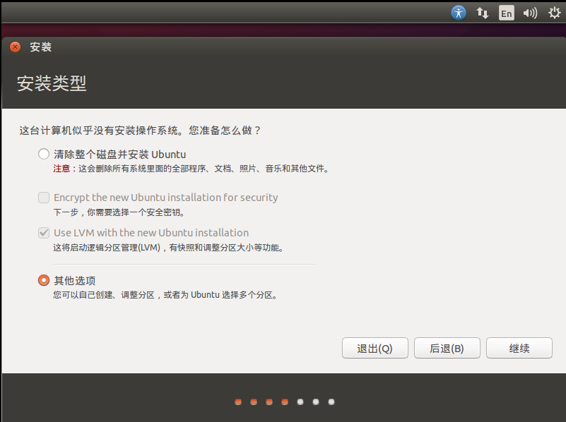
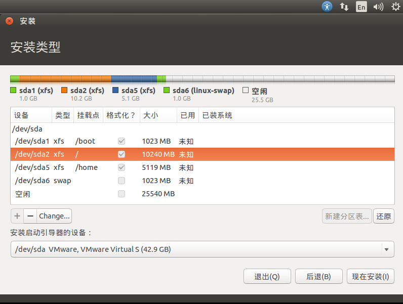
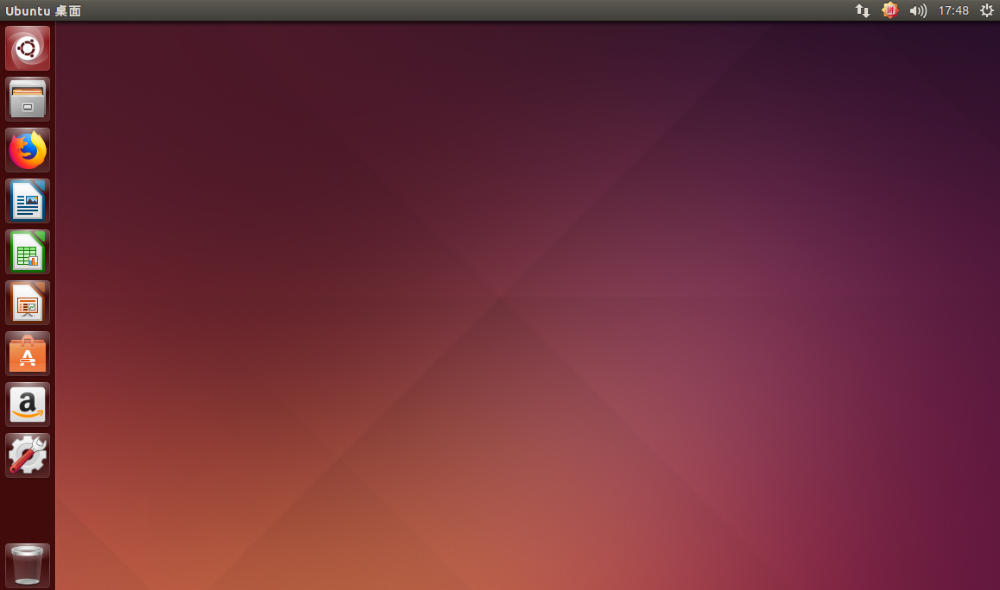
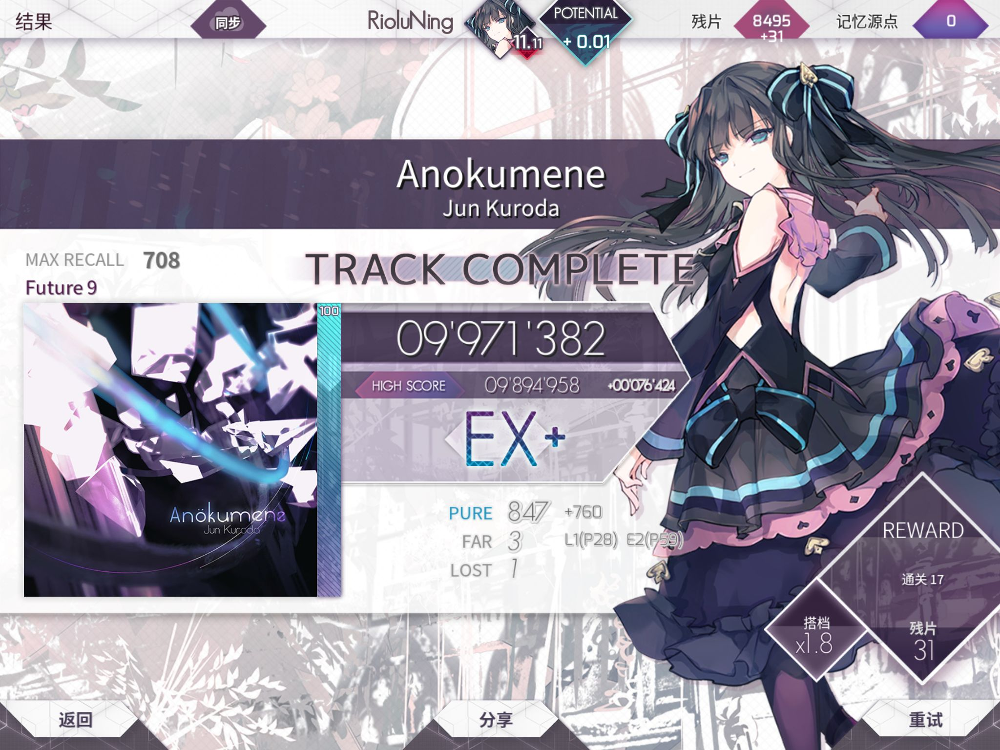

-反复入门Linux-
高中打比赛时简单用过Ubuntu系统，到现在都忘得一干二净，于是再次入门一遍。首先当然是要安装Linux Ubuntu。
安装
为了方便就不装双系统了，准备用虚拟机。然而也没少花时间折腾这玩意……
配置
实验室的机子是Win10系统，8G内存，Core i5-6500 CPU @3.20GHz。于是给虚拟机分了2G内存，40G硬盘。这里用的是典型安装，直接安装程序光盘映像文件。
生成虚拟机时需要用户名和密码，咱随便设一个1234。输完这个其他全部自动默认安装了。
由于本机没有CD驱动，设置里取消连接CD。
装上VM Tools，然后参考-自动调整大小-自动适应客户机，这样分辨率就能自动调整了。
首选项启用虚拟打印机以连接打印机。
系统只有英文，在设置里把中文装一下。先在语言支持里安装，然后在输入法里添加拼音。
坑一
用 VMware 15 连鼠标都不显示，装Ubuntu20和14都是这样，而且稍微设置一下马上无响应，无法结束进程只能重启电脑，网上也没有解决办法，一气之下卸了装 VMware 12，这下可以正常安装Ubuntu20，但14卡了很久在Copying files上，想选挂起结束，好嘛，又无响应+结束不了进程只能重启。至于网上说进不去虚拟机就取消设置里显示器的3D加速图形勾选，不知有没有用。
—— 使用VM12。
坑二
在虚拟机运行的时候调整虚拟机设置必卡死无响应，调任务管理器强制结束后不能再开虚拟机，因为VMware的进程还在后台跑着而且Access DENIED。 搜解决方法无果，只能重启电脑。好嘛我光重启电脑都几十回了，烦。用VM的修复功能不但不能结束进程还得重启电脑，还不如不用。
—— 在虚拟机运行时不更改任何VM设置。
坑三
声卡报错。A device ID has been used that is out of range for your system. 声音将中断。
—— 解决办法是声音设置-声音控制面板-录制-启用Stereo Mix。然后回到VM连接声音即可！
坑四
VM12在WIN10上的复制文件功能可能会崩溃，小文件还行十几兆的就直接卡死。还是设置一下共享文件夹比较稳妥，目录在 /mnt/hgfs/。 另外还要运行一句话挂载文件夹
$ sudo vmhgfs-fuse .host:/ /mnt/hgfs -o subtype=vmhgfs-fuse,allow_other—— 不要使用复制粘贴/拖拽功能，使用文件共享。
警一
虚拟机开机提示
Failed to initialize policy for cpu: 0 不知道咋回事，目前没影响。
最终
大功告成！先玩一把麻将连连看。
Ch3 手动安装
Ubuntu20自动分配的磁盘，这次手动分配一下。还记得之前没装上的Ubuntu14，正好拿来练手。
VM创建空磁盘，挂载CD为Ubuntu14镜像，进入到系统安装界面。直接选择安装。

然后选择自己调整分区。

我倒是没在Ubuntu上看到哪里能选LVM和GPT咋设置的，鸟哥上剩余9G也不知道是咋回事。

总之是装完了，这次没有卡在Copying files上但下载语言包依旧很慢。所以不用VM的自动安装会好一些咯？这里居然不用再设置共享文件夹直接就能看到了。
啊，梦回高二。当时还分不清Linux和Ubuntu有啥区别，只能开着网易云听歌打代码呐……
今日趣事
- 11.11单身节，恰好咱的ptt维持在11.11——
- 耳机线断了之后修了半天只把左耳机线连上了——单边耳机。
- 折磨我很久的保暖衣上的刺（头发渣）终于找到并拔掉啦！
下一篇：登入系统